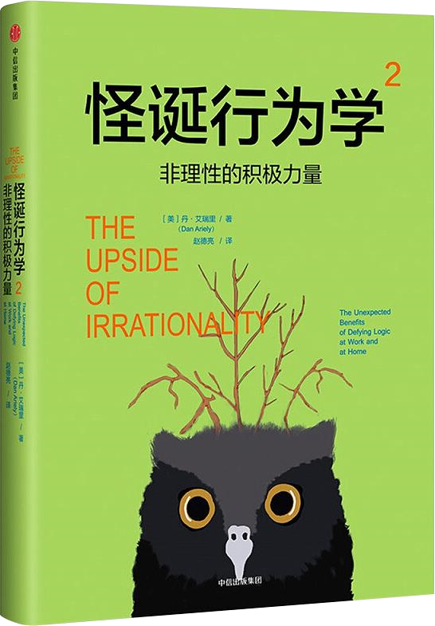

注：【】部分为笔者心得，非原文摘抄。
- 人们并非想象的那样理性。
- 【压力之下，进步更快！】
- 损失厌恶：人们失去自认为是属于自己的东西时会产生痛苦，而这一痛苦要大于得到同样数量该事物所产生的愉悦感。
- 对于认知能力要求越高的工作，高额奖金产生反作用的可能性越大；而对于非认知乃至机械性的工作，奖金越高可能业绩就越高。
- 如果一个人就是靠不理解某些事情才能挣钱，那么让他理解这些事情是非常困难的。——厄普顿·辛克莱尔
- 计划与现实根本就不是一回事。
- 引发自我表现的过度激励可能来自危险、高额薪酬或社会压力，在所有的状况下，人类与动物在事关根本利益力求超常表现时，他们的实际表现似乎都比没有压力的状态下表现得差。
- 激励人的最佳机制非常难以建立，同时，加强激励并不一定导致最佳的成绩和表现。
- 金钱激励对于头脑创造力所起的作用不是单一和不变的。
- 如果没有任何东西能干扰一个人的头脑，影响他的能力，那么他就能百分之百地集中精力、随机应变。
- 【就智力型工作而言，兴趣的激励效果通常大于金钱，要产生兴趣，首先要为工作付出。】
- 如果你是一名管理人员，要想调动员工的积极性，让他们和你齐心协力，那么就必须重视他们，重视他们的工作，重视他们的劳动成果。
- 【激励员工最重要的是要让员工看到其劳动成果的意义。】
- 投入劳动会产生依恋。
- 【通常，人们会对自己的劳动成果估价过高。】
- 如果努力没有获得成功，对作品的依恋程度将急剧下降。
- 如果人们过度沉湎于自己的见解会导致非常糟糕的后果。
- 让受众觉得创意是他们想出来的，他们就可能全心全意地采纳。
- 报复是人类根深蒂固的一种本能。
- 报复的害处在于，它只是出于一种预期；它本身是痛苦，而非愉悦；最起码痛苦的成分更大。——马克·吐温
- 【把报复转化为竞争动力。】
- 中断愉悦感的体验过程是有好处的。
- 不要以为休息片刻可以做暂时摆脱烦人的苦差事，想一想重新开始做不喜欢的工作有多难。
- 鉴于人类的适应的倾向，沿着渐进的道路前进才会感受到更大的幸福。
- 【“外来的和尚会念经”是老板的适应性的表现，所以要尽量避免被“外来的和尚”所取代，就要不是给老板新的认知和体验。】
- 要想人们对苦难作出反应，最有效的方式是通过感情的吸引力，而不是对大众需求的客观解读。
- 行为会被情绪左右。
- 从本质上看，一旦感情用事，就会作出短期决定，而它却会改变我们很多的长期决定。
- 先冷静下来，再决定采取何种行动对我们才是有利的。
- 有了办法就拿来试验，这是常识，失败了就坦率承认，再尝试其它办法。但是无论如何，必须不断尝试。——富兰克林·德拉诺·罗斯福